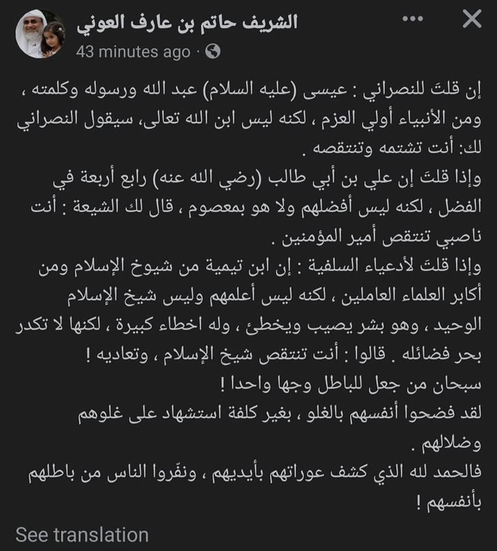

দুঃখ কারে বলি। যিনি তায়াসসুবের বিরুদ্ধে ওয়াজ শোনালেন, দিন শেষে তিনিই বড় মুতাআসসিব…
১৩ ফেব্রুয়ারি, ২০২৩
দুঃখ কারে বলি। যিনি তায়াসসুবের বিরুদ্ধে ওয়াজ শোনালেন, দিন শেষে তিনিই বড় মুতাআসসিব নিকলা। সাথে ইবনু তাইমিয়ার প্রতি সুপ্ত বিদ্বেষ ফ্রি। শরীফ হাতিম আওনি সাহেবের এ পোস্টে আমি শুধু লিখেছিলাম-
لقب 'شيخ الاسلام' إذا أطلق فالمراد به إبن تيمية فقط.
و هو الشخص الذي لم يره العالَم قبله ولا بعده مثله.
رحمه الله رحمة واسعة و جزاه عن جميع المسلمين أحسن الجزاء.
ব্যস! এতেই বেচারা ক্ষিপ্ত হয়ে আমায় ব্লক মেরে দিলো। দেশে ব্লক খাইতে খাইতে এখন বিদেশী থেকেও খাচ্ছি🤣
